From the Scullery
These are the family recipes I remember. Like many family cooks, Mum, Gran and Nanna Muir rarely measured anything precisely. A handful of this, a knob of butter, enough milk to make it look right. Those were the instructions I grew up with.
The women of Armour Street knew how to cook. They understood flavour and how to coax every last bit of it from the simplest ingredients. They cooked with the cheapest cuts of meat and, especially during the years of rationing, learned to make the most of whatever they had. They worked with the seasons, not because it was fashionable, but because that was when food was freshest and at its best. They were still closely connected to the land.
They fed their families three proper meals every day. Snacking was almost unknown, not because they were especially virtuous, but because mealtimes were when you ate. The only fast food they knew was fish and chips or ice cream, both made from good, wholesome ingredients.
Cooking was a full-time occupation and, for the most part, it was the women who carried that responsibility.
That love of cooking travelled down through the family, though in the next generations it was no longer only the women who stood at the stove.
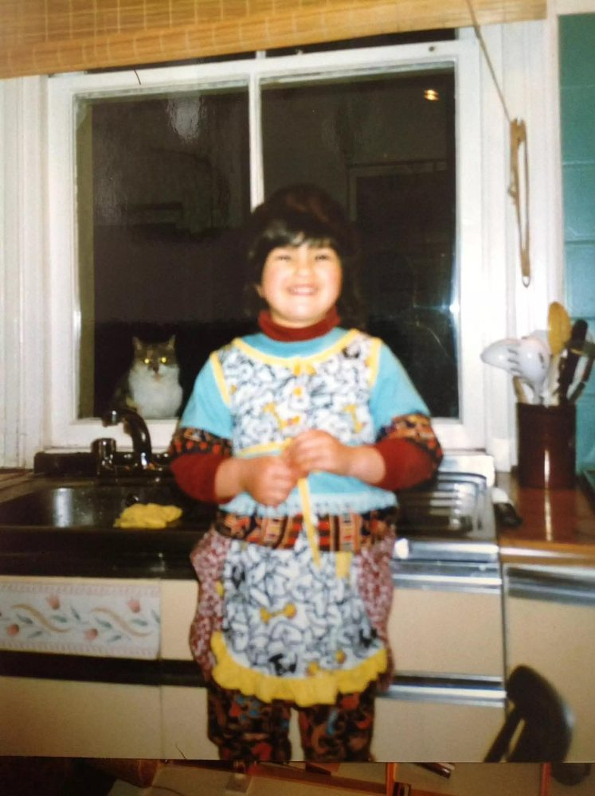
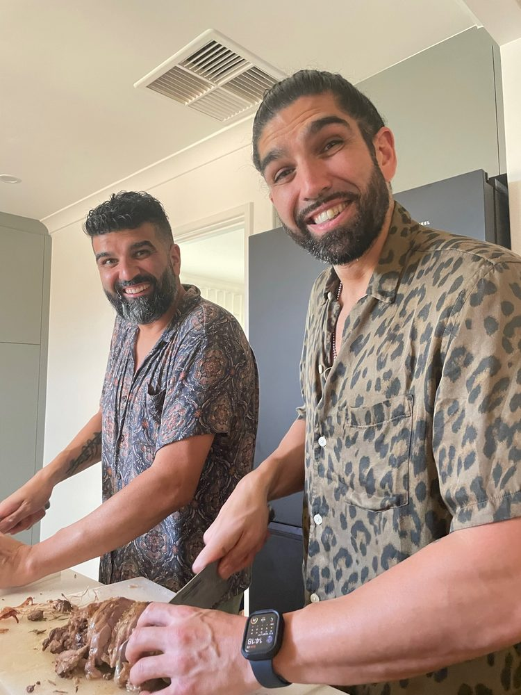
My three children Tara, Amar & Aneel — another generation in the kitchen.
Scotch Broth
Scotch broth was a weekly staple in the Muir household. Filling, economical and deeply satisfying, it welcomed everyone home after a hard morning's work. The pearl barley slowly softened into a creamy, chewy broth while the lamb flavoured the whole pot.
Washday was when Nanna Muir made it most often. Once the vegetables had been chopped and the broth was simmering gently on the range, it needed very little attention, leaving her free to spend the morning hauling, steaming and washing, up and down the tenement stairs.
Gran loved telling an old joke about making mutton go further.
“Just ask the butcher to gie ye a sheep's heid and leave the eyes in… that'll see ye through the week.”
Ingredients and method
A piece of lamb neck or mutton that fits in your pot, a big cup of pearl barley, four grated carrots, a leek sliced finely and one small turnip, diced. Add salt and pepper, then fill the pot nearly to the top with water.
Bring to the boil, reduce the heat and simmer for at least two hours. Skim any froth from the surface and cook until the meat is tender and the broth has thickened. Season and serve.
Eggless Pancakes
Wartime recipes were often named for the very ingredient they lacked: eggless, meatless and butterless. It seemed a strange way to make food sound appealing!
Method
Mix four tablespoons of flour with a pinch of salt and sugar. Add enough milk to make a nice, thick batter.
Heat a little dripping in a frying pan until hot, then lower the heat. Pour in a quarter of the mixture to make a medium-sized pancake. Cook until browned on both sides.
Eat with lemon juice and a little sprinkle of sugar.
Lord Woolton Pie
There also seemed to be a wealth of wartime recipes named for the aristocracy. This always struck me as odd. Surely they were better off than most, even during a war?
Method
Choose whatever vegetables are in season: turnips, potatoes, cauliflower, leeks, onions and carrots. Keep the potatoes for the mashed topping.
Peel the potatoes, saving the peelings to bake in the oven with a little salt, and cook in salted water until soft. Mash with butter, a little milk and salt.
Peel, wash and dice the other vegetables, then boil until nearly cooked. Drain and place in a pie dish.
For the sauce, melt a dessertspoonful of butter in a pan. Add a couple of spoonfuls of flour and mix well, then slowly add milk, stirring continuously until thickened. Season with salt and pepper.
Pour the sauce over the vegetables. Spread the mashed potato on top, making plenty of ridges and edges to brown and crisp. Finish with a sprinkle of grated cheese.
Bake in a hot oven until the topping is golden.
The Hay Box
The hay box was often referred to jokingly by mum as another piece of wartime nonsense. In truth, it was an early form of slow cooker.
Instead of electricity or gas, it relied on layers of hay, straw or newspaper to trap heat, allowing food that had first been brought to the boil to continue cooking without further fuel.
The principle was simple. A hot, covered cooking pot was surrounded by thick insulating material inside a box, then left undisturbed while the retained heat did its work.
It saved precious fuel during years when every resource had to be stretched.
This of course is a historical cooking method rather than a recommended modern food-safety procedure. Do beware!
The Scottish Fry-Up
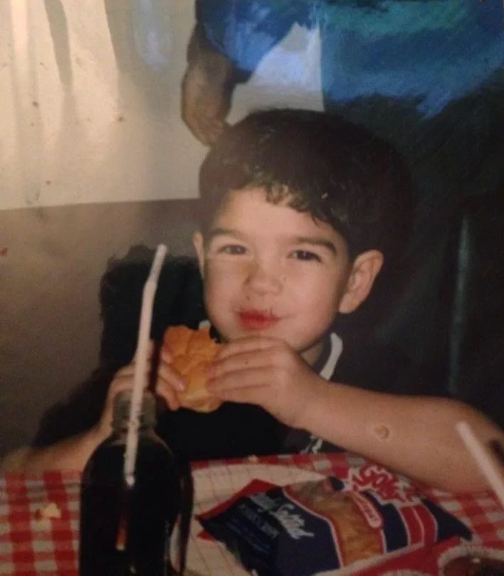
In my childhood, breakfast at weekends was always a big affair. Eggs and bacon were the staples, with square sausage mostly replacing links.
Square sausage was also the favourite on busy mornings, when it would be served in crispy Glasgow bread rolls. We ate it at lunch at the school café too, with tomato sauce dispensed from little tomato-shaped bottles. We'd use the sauce to write the names of boys we fancied.
At home, the fry-up was never complete without slices of crisply fried, soft-centred black pudding or its close relative, fruit pudding.
Tattie scones were cooked on a heavy, flat iron girdle, then fried until crisp and golden at the corners. They were my favourite.
The finished plate was topped with a generous helping of HP sauce. Dad loved it and had it with almost everything.
Tattie Scones
Method
Mix four to six mashed potatoes with a cup of plain flour and a little salt to form a soft dough.
Roll into a circle about half an inch thick and cut into triangles. Cook on a lightly greased girdle for three to four minutes on each side, until golden.
Serve hot with the fry-up.
Mince and Potatoes
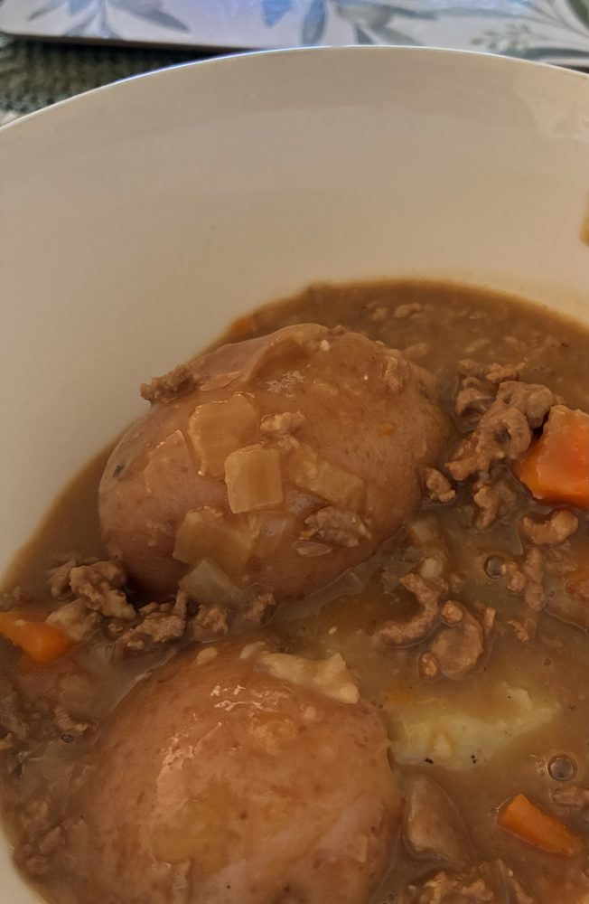
Mince and potatoes were a staple we ate every week.
If there was any left over, though seldom the case, Dad would reheat the mince with an egg coddled in the middle and serve it on toast.
Method
Brown a pound of minced beef, not too lean, in a large pot over medium-high heat, breaking it up with a wooden spoon.
Once the beef begins to brown, add an onion and three or four chopped carrots. Cook for a few minutes until the vegetables start to soften, but not brown.
Sprinkle a good handful of porridge oats over the meat and vegetables and stir well. Season with salt and pepper.
Add beef stock, bring to the boil, then reduce the heat and simmer uncovered for about twenty minutes, until the gravy begins to thicken. Add Worcestershire sauce and an Oxo cube, then continue cooking gently for another fifteen to twenty minutes.
Meanwhile, boil four to six potatoes in salted water until tender. Drain and mash with a little butter and a splash of milk.
Use a potato masher, never a blender, or you'll end up with a starchy mess.
Serve the mince and mashed potatoes piled together, with salt and pepper to taste.
Fort Beano
I think this may have been a recipe I first saw on Blue Peter. Wherever it came from, it became a birthday staple.
A large, square mound of mashed potatoes formed the fort, with sausage sentries standing to attention at each corner. Cheese flags flew high on cocktail sticks, and baked beans formed a kind of internal moat.
The crowning glory!
Stovies
Stovies was a meal Mum had grown up with. She had enjoyed Nanna Muir's cooking throughout her childhood, and many of the dishes she later made for us came directly from Nanna's repertoire.
We ate stovies regularly at home in Glasgow.
Mum's recipe didn't use minced beef or leftover roast, but the best butcher's pork sausages she could buy.
The secret was slow cooking, allowing almost all the liquid to be absorbed until the potatoes were soft and the mixture was just beginning to catch on the bottom of the pot.
Served to a family of six, this often meant you were lucky to get one pork sausage each. My older brother regularly distracted me at the table so he could steal mine.
This was Mum's favourite meal for busy house-cleaning days.
Every window would be thrown wide open. She was a great believer in fresh air. Every bed would be stripped, the sheets soon blowing in the wind before being brought indoors again and tucked into place with her usual hospital corners.
Next came the windows, then the hoovering. Every carpet and corner was swept, scrubbed or mopped within an inch of their life.
She may have converted to Catholicism, but her Presbyterian work ethic was still strong. Living in a small council house with a family of six meant a weekly full house clean was the only way to keep on top of the mess.
She was not living in “Annacher's midden.”
Method
Melt a little dripping or butter in a heavy pot. Add a sliced onion and cook until soft. Add four big carrots, a small turnip, four large potatoes, all cut into chunks, followed by six to eight good-quality pork sausages, seasoning and a cup of beef stock.
Cover tightly and cook gently over a low heat for an hour or so, until the potatoes are soft, the sausages are cooked through and most of the liquid has been absorbed.
Stir gently before serving, with large glasses of ice-cold milk.
Tripe and Onions
Milky tripe and onions was one of our favourite childhood meals.
The tripe had a soft texture but still offered a little bite, while its honeycomb surface was delicious in the mouth.
The secret to making it so satisfying was the riced potatoes, added at the very last moment with a generous sprinkle of chopped curly parsley, freshly picked from the garden.
Riced potatoes, rather than mashed, provided another texture on the tongue. The milk soaked into the little strands without completely dissolving them, making a dish full of intriguing textures.
Method
Cut beef tripe into bite-sized strips. Bring to the boil in water for ten to fifteen minutes, then drain.
Add two large peeled and sliced onions, a generous jug of milk and the same amount of water, or enough liquid to cover.
Bring gently to a simmer and cook over a low heat until the tripe is tender, which may take one to three hours, depending on the tripe used. Stir occasionally and avoid boiling the milk vigorously.
Season with salt and pepper and finish with freshly chopped parsley.
Serve in a bowl with a large spoonful of riced potatoes.
Steak Pie
Steak pie was another dish we ate often when I was growing up. But Ne'erday was the day when you simply had to have it.
The crisp, golden crust, with its corners soaked in rich gravy, made it a show-stopper.
It was cooked in the metal pie dish kept specially for the occasion, with a china bird-shaped vent at its centre. When the pie came out of the oven, steam escaped from the bird's beak in a satisfying gush.
I always got to cut and shape the pastry leaves that decorated its golden crown.
Method
Coat stewing beef lightly in flour and brown in a heavy pot. Add onion, carrot and beef stock, then simmer gently until the meat is tender.
Transfer to a pie dish, position the china pie bird in the centre and cover with shortcrust pastry. Seal the edges and decorate with pastry leaves.
Bake in a hot oven for approximately thirty-five to forty minutes, until the pastry is golden and the filling is bubbling.
Serve with mashed potatoes.
Shortbread
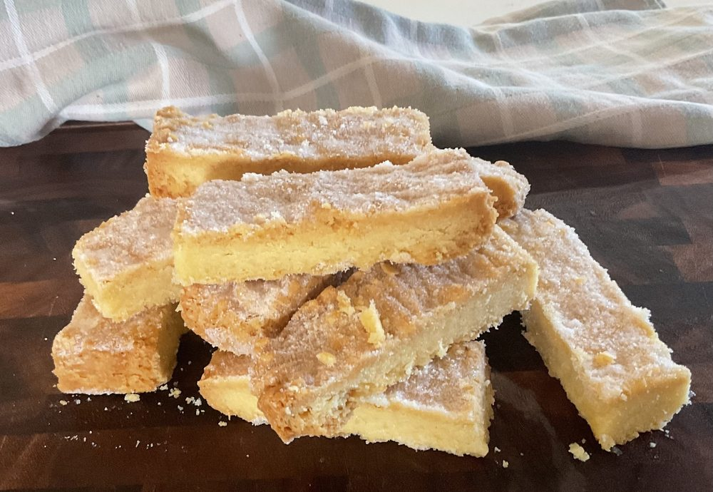
Scottish shortbread in our house meant Hogmanay.
I'm sure we ate it at other times, but Hogmanay could not have happened without its crisp, slightly toasty deliciousness.
The baking marked the end of the pre-Ne'erday cleaning spree and the beginning of the cooking. Everything had to be spotless for Hogmanay, but once the mixing bowls and wooden spoons appeared, you knew the delicious aromas were about to begin.
Mum used to bake shortbread in the oven after roasting a chicken or a delicious meaty rib roast. As the oven cooled from its previous job, the golden dough went in.
The heat might still need a little tempering, perhaps with the door slightly ajar, to ensure the long, slow baking that created the best crisp, lightly browned edges.
The flour was always plain, never rice flour, in 'oor hoose'.
In the old days, of course, at Armour Street, trays of golden dough were carried to the baker's cooling oven. For a few pennies, they would be cooked to perfection for families throughout the street.
Method
Cream a cup of unsalted butter with a scant cup of sugar until the mixture lightens in colour to pale yellow. Sift in two to two and a half cups of flour and a pinch of salt, mixing gently until a dough forms.
Press into a baking tray or tin. Prick the surface with a fork and use the prongs to mark a decorative border around the edges.
Bake gently until pale golden, watching carefully for the outer edges to take on a slightly darker, toasty colour.
Sprinkle with caster sugar, then allow to cool before slicing.
Empire Biscuits
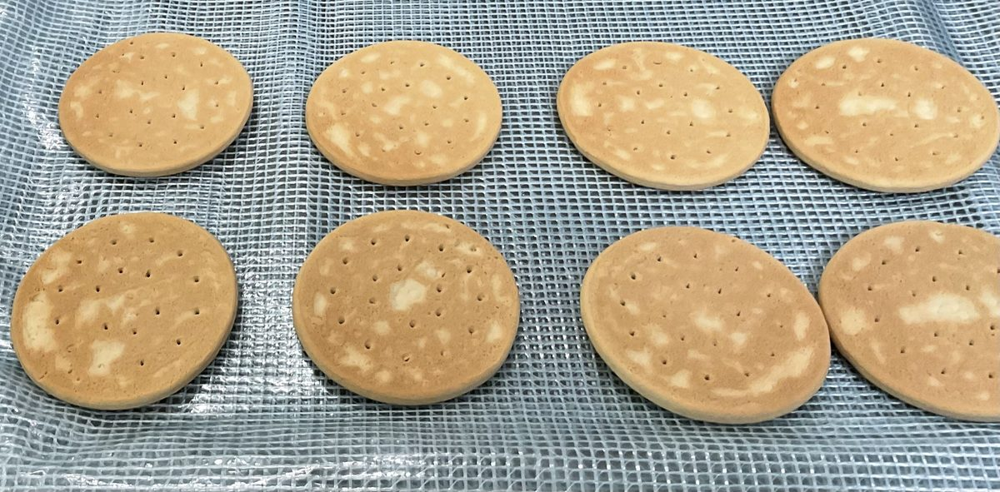
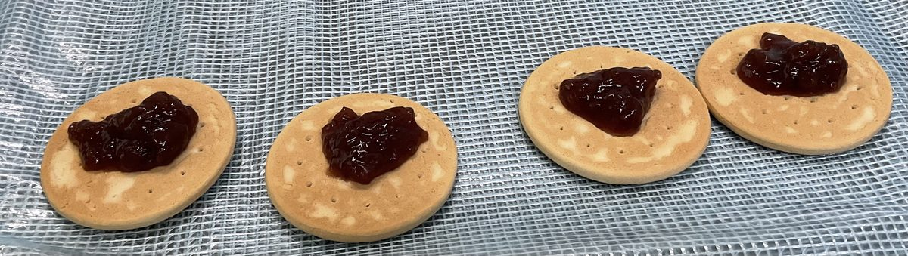
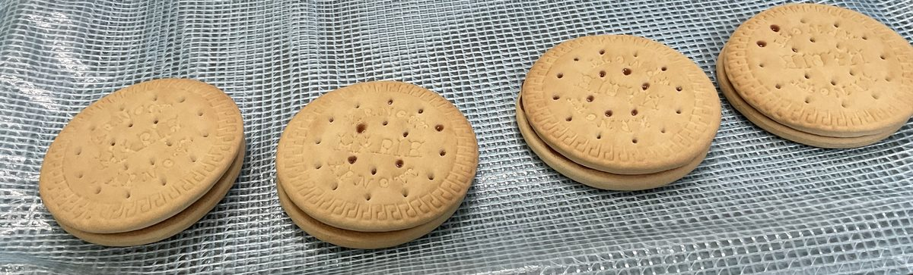
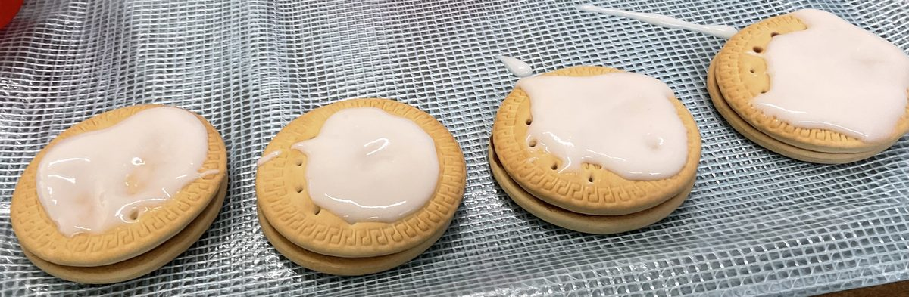
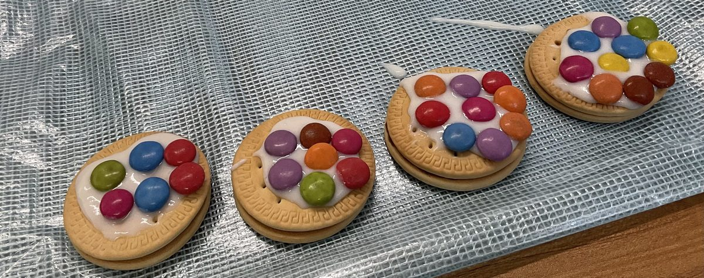
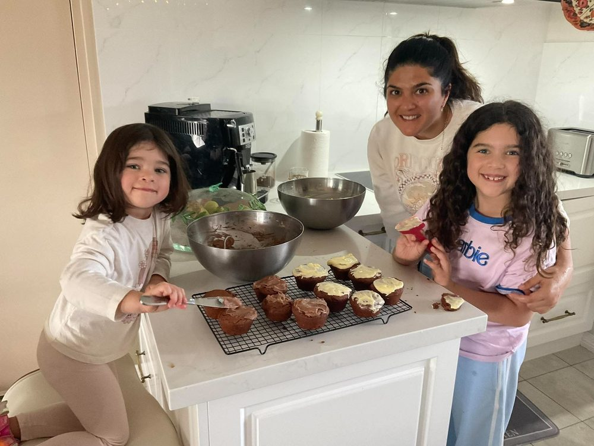
Baking fun – Tara
Empire biscuits were my favourite and one of the first recipes I was allowed to make.
If the biscuits had already been baked, it was the simplest but most rewarding of tasks: sandwiching them together with jam, then icing and decorating the tops.
It's still my favourite recipe to make with my granddaughters.
Very little effort, but an enormous reward.
Method
Sandwich together two thin, round shortbread biscuits, made from the shortbread dough rolled more thinly and cut into circles before baking. Alternatively, use a packet of suitable thin shortbread-type biscuits.
Spread with homemade jam.
Mix a cup of icing sugar with a few drops of water until smooth and spreadable. Ice the top of each biscuit and finish with a glacé cherry if tradition is followed, but the wee ones usually prefer sweeties.
Clootie Dumpling
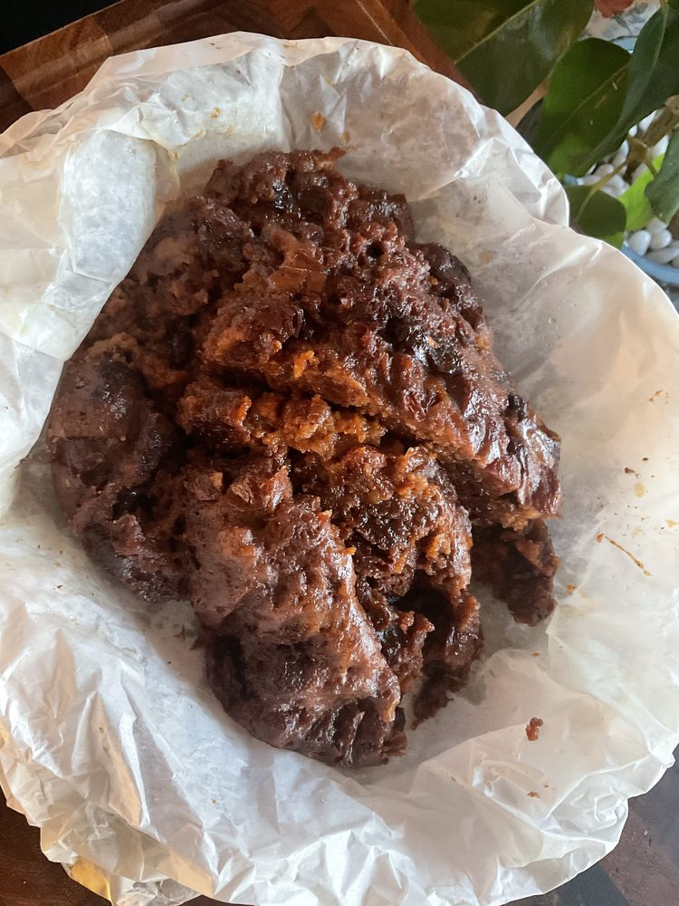
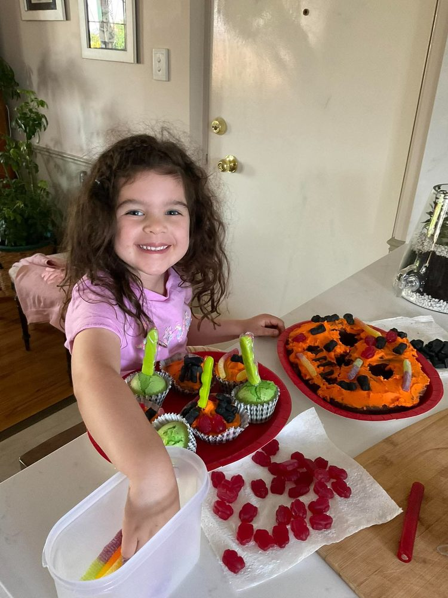
Clootie dumpling was one of the most delicious treats in our house. It was often made instead of a birthday cake, but always appeared at Hallowe'en and Ne'erday.
Making it was a family affair. Everyone in the house that day took a turn stirring the mixture. Once it was wrapped in its cloot, each of us gave it a slap for good luck.
Then it boiled for hours, its warm, spicy fruitiness filling the whole house with a wonderful aroma.
The trick was flouring the damp cloot before adding the mixture. This helped form the distinctive skin around the dumpling as it boiled. Once removed from the cloth, it was dried near the fire, turning it occasionally until the outside developed its familiar tan-coloured crust. Nowadays this can be done in a warm oven.
Thick slices could be eaten on their own or with custard.
The following morning, slices fried and served with eggs made the most delicious, celebratory breakfast.
Method
Mix three cups of flour and a teaspoon of baking soda with mixed spice, a generous helping of cinnamon and half a teaspoon of salt.
Add a cup of sugar, a cup of suet, (I’ve started using very hard frozen and grated butter instead of suet, it’s a lighter flavour) a cup each of sultanas, currants and raisins, and a grated apple.
In a saucepan, gently warm some buttermilk or full-cream milk with a beaten egg and a cup of black treacle, taking care not to overheat the mixture. Add to the dry ingredients and stir together.
Scald a muslin cloth, the cloot, in boiling water. Once cool enough to handle or use tongs, wring it out and spread it on the work surface. Sprinkle liberally with flour.
Place the soft dumpling mixture in the centre. Gather up the edges of the cloth and tie securely with string, leaving enough room for the dumpling to expand.
Place an upturned saucer in the bottom of a large pan of boiling water, deep enough to cover the dumpling. Lower the dumpling onto the saucer, cover and simmer for approximately three hours. Check the water level regularly and top up with boiling water as needed.
Remove the dumpling carefully and peel away the cloot, taking care not to disturb the skin.
Leave it to dry near a warm fire or in a gently heated oven. Allow it to rest before slicing.
Rhubarb Crumble
Rhubarb crumble was a favourite dessert, often completing a meal when soup had been the main event.
Rhubarb was one of the few fruits that grew productively in a Glasgow garden. Its sharp, tangy flavour was wonderful.
After picking the stalks from the patch at the bottom of the garden, and setting aside what was needed for the crumble, Mum would give any children nearby a stick of rhubarb and a little paper twist of sugar.
A pre-dinner treat.
The crumble was always served with lashings of custard, an irresistible mixture of crisp topping and luscious fruit.
Method
Place chopped fresh rhubarb in a pie dish. Sprinkle with sugar, a pinch of ground ginger and cinnamon, then add a little vanilla extract or a splash of orange juice.
For the crumble topping, mix a cup of flour with some porridge oats and sugar, then rub in knobs of cold butter until the mixture resembles coarse crumbs.
Scatter over the fruit and bake in a moderate oven until the topping is golden and the rhubarb is bubbling beneath.
Serve with plenty of custard.
Mackerel in Oats
We used to catch mackerel in the Firth of Clyde.
I say we, but I really mean me.
Being the youngest, I was given only a tackle and line while my sister had a proper rod and reel. But for whatever reason, I was always the successful one.
Maybe my trick of fishing through holes in the pier was the secret. I'll never know.
Once home, Mum would coat the mackerel in oats and pan-fry it, serving it with the most delicious boiled Ayrshire new potatoes, a handful of chopped sybies (spring onions) and a generous dollop of fresh butter.
Spectacular!
Dad's Specialities
Dad
Dad had several recipes he loved and would regularly make: potted meat, fish Mornay and pressed tongue.
The cow's tongue was of particular interest to me, especially when he peeled away the outer layer. It sounds gruesome now, but it was fascinating to watch the grainy surface come away, revealing the smooth meat beneath.
Once rolled, the tongue was stored in the fridge, pressed beneath a heavy iron for a day. It could then be sliced thinly and made into the most delicious sandwiches.
Long after the house itself disappeared, whenever Scotch broth simmers on the stove or shortbread slowly browns in the oven, we can all remember, even just for a moment, 15 Armour Street.